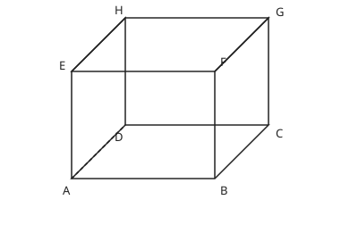
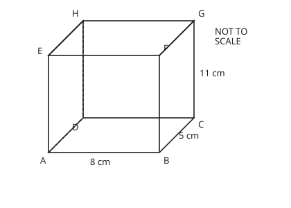

Based on Cambridge IGCSE Mathematics Core and Extended Coursebook, Chapter 15, printed pp.523–530 (trigonometry in three dimensions). The local IGCSE scan is missing parts 050–051, so printed pages 523–530 were not available. Teaching follows the official books.json title and the standard 0580 development of lengths and angles in a cuboid or other solid, by identifying a right-angled triangle and using Pythagoras or trigonometry. Own wording and new numbers.
Key words: trigonometry in three dimensions
A length or an angle in a solid can often be found by first identifying a right-angled triangle in the figure. The sides of that triangle may be edges of the solid, face diagonals, or a space diagonal. Pythagoras’ theorem and the sine, cosine or tangent of an angle are then used in that triangle. This is trigonometry in three dimensions.

In a cuboid \(ABCDEFGH\) with base edges \(AB=c\) and \(BC=a\) and height \(CG=b\), the space diagonal \(AG\) satisfies \(AG^2=a^2+c^2+b^2\). An angle such as angle \(GAC\) can then be found from a trigonometric ratio in triangle \(GAC\).
Book: the method of a right-angled triangle in a solid, printed pp.523–530 (pages not on the local corpus). New integer numbers.
A cuboid has sides 3 cm, 4 cm and 12 cm. Find the length of a space diagonal.
Book: the method of a right-angled triangle in a solid, printed pp.523–530 (pages not on the local corpus). New integer numbers.
A cuboid has a rectangular base 6 cm by 8 cm and height 24 cm. Find the length of a space diagonal.
A cuboid has sides 3 cm, 4 cm and 12 cm. Find the length of a space diagonal.
\(13\)
A cuboid has a rectangular base 6 cm by 8 cm and height 24 cm. Find the length of a space diagonal.
\(26\)
A cuboid has sides 5 cm, 12 cm and 84 cm. Find the length of a space diagonal.
\(85\)
0580/43/O/N/20 Question 6(c) only, 4 marks, together with the opening sentences of the question so that the part is self-contained. Official QP and official MS. Parts (a) (volume) and (b) (whether a pencil fits) are omitted.

ABCDEFGH is a cuboid.
\(AB=8\) cm, \(BC=5\) cm and \(CG=11\) cm.
(c) (i) Calculate angle \(CAB\). [2]
(ii) Calculate angle \(GAC\). [2]